PPk技术社区所定义的奥丁号（ODIN）是Open Data Index Name（开放数据索引命名）的缩写，以比特币链为核心+可多级扩展+支持灵活映射其它链和传统技术平台+非传统抢注模式的命名机制，很好地兼顾了安全、分散、易记忆这三点，可以在兼容W3C的DID（去中心化标识）标准协议框架下，提供自主、可信的身份标识应用服务；还能进一步灵活扩展适应更广泛的应用需求，比如自主可信区块链域名。关于奥丁号（ODIN）的详细定义请访问 http://ppkpub.org 获取。
PPk浏览器安卓APP最新版本V0.3.2里，已支持将奥丁号作为自主身份，并登录应用服务。这里将具体说明下操作方法。
安卓手机用户可以从下述网址下载安装：
https://github.com/ppkpub/PPkBrowserAndroid/raw/master/bin/PPkBrowser.zip
将上述地址复制到安卓手机浏览器里访问，下载后解压，点击其中的“ppkbrowser.apk”，即可开始安装，安装完成后打开运行。
注：
(1) 如果安装时提示“确认安装尚未验证的应用”，点击确认即可。
(2) 目前APP只支持Android安卓系统，苹果手机iOS因为相关应用商店政策限制不支持。
(3) 电脑和苹果手机上可以通过浏览器访问网页版工具，来注册奥丁号，具体说明请参考：https://ppkpub.github.io/docs/DOC_PPk_BrainTool_Tutorial.pdf
PPk浏览器的主界面显示效果如下图所示：
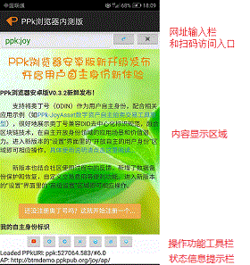
窗口底部的多个操作功能按钮说明如下：
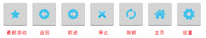
一、注册奥丁号
如果是新安装PPk浏览器，尚未注册奥丁号，请参考下文的说明来注册。如果已有注册有奥丁号，则可以直接跳到后文第6页“使用奥丁号作为自己的自主身份”。
打开PPk浏览器后，点击“设置”按钮，就可以查看你的比特币钱包地址和余额等信息，如下图所示。
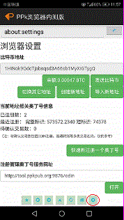
比特币，一种数字加密货币，缘起一个神秘大神的程序，超高算力支持的工作量证明（PoW）算法，保证了比特币网络中每一个参与节点上区块链数据的一致性并难以篡改，可以支持全球点对点无需中介的交易支付。
上图中“比特币地址”下方的类似“1HiNok...”这样的一串字符就是你的比特币钱包地址，复制后发送给别人，就能接收别人给你发送的比特币了。
在这里点击“导入新地址”按钮，可以导入自己已有BTC地址的私钥使用，效果是一样的。客户端支持导入多个地址进行注册和管理，点击“切换其它地址”后从具体地址列表选择即可。
注意：第一次运行时，请复制备份好自动新建钱包地址时提示备份的私钥，一旦丢失，将无法恢复。
因为奥丁号是基于比特币协议来运行的，所以你需要先拥有一些比特币才能注册自己的奥丁号，刚开始一般有0.001BTC就足够体验了。
获得比特币有两种方式，程序“挖矿”或在线买卖。现在“挖矿”已经是专用挖矿设备和专业矿工的天下，普通人很难通过电脑挖矿来获得比特币，目前可以通过像coincola.com，localbitcoins.com这样的交易网站来小额买入（这些网站上都有比较详细的中文操作说明），也可以直接从手里持有比特币的朋友那里购买。
有了一定数量的比特币（余额显示有0.00003BTC以上）后，就可以开始注册奥丁号了。 点击设置界面里的“快速注册一个奥丁号”按钮，弹出对话框如下图所示：
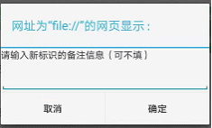
按提示输入一段文字（作为备忘信息，也可以不填），点击“确定”按钮后，将看到如下图这样的提示：
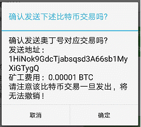
确认上述注册交易信息无误后，点击“确定”按钮即可发送该交易，稍候会收到发送成功的提示信息，如下图所示：
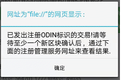
除了通过上述“设置”界面快速注册奥丁号外，还可以打开注册管理服务来操作更复杂的注册和管理功能，具体操作方法说明如下：
点击“设置”界面里的“注册管理扩展服务网址”区域的“打开”按钮，如下图所示：
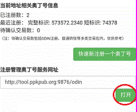
浏览器将显示对应的注册管理服务页面，如下图所示：
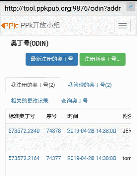
点击其中的“注册新奥丁号”按钮，就可以进入注册新奥丁号的操作界面了，如下图所示：
首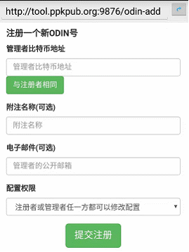
先，可以直接点击“与注册者相同”按钮将自己的比特币地址指定作为标识的管理者。如果为了方便管理或更高的安全性，作为注册者你也可以输入一个自己其它的比特币地址作为管理者。
然后，输入一段文字作为所注册奥丁号的备忘名称；再根据需要可以选择输入自己的电子邮件地址，不输入也可以；再从“配置权限”下拉列表选择一种对标识配置信息做修改的权限验证方案，一般选择缺省的“注册者或管理者任一方都可以修改配置”即可，如需要调整可以按照奥丁号协议的定义来具体选择。
最后，点击“提交注册”按钮，再次确认所提示注册交易信息无误后，点击“确定”按钮即可发送该交易，客户端会将你填写的信息按奥丁号协议规范组织打包成比特币交易并广播到比特币网络，如下图所示。
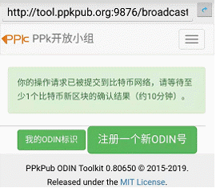
现在可以先关闭PPk客户端，然后到网页浏览器里访问 http://btc.com ，在其网页右上角的查询框里输入你的比特币钱包地址，比如上述示例中的1HiNok9GdcTjabsqsd3A66sb1MyXiGTygQ，就可以查询你所发出的奥丁号注册交易的被确认情况，显示如下：
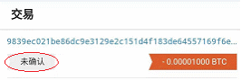
当类似上图中红圈处的显示文字从“未确认”变成确认数值大于等于1时，就说明刚才你所发出的奥丁号注册交易已被比特币区块链所确认收录，现在就可以重新打开PPk浏览器查看注册结果了，点击“设置”按钮，就可以查看最新注册到的奥丁号信息，如下图所示：
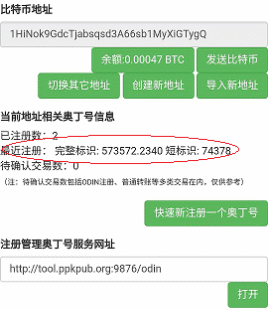
上图中红圈处显示的“573572.2340”就是新注册得到的ODIN完整标识，其中573572
是对应交易被收录的区块号，2340是交易在该区块内部所收录全部交易列表中的索引号，这两个数字就组成了唯一存在的奥丁号完整标识。而按照奥丁号在BTC区块链上注册的顺序，从0开始，依此加1，得到对应的短标识，如上图中的74378。
如果注册了多个奥丁号，可以点击上图中“注册管理扩展服务网址”区域的“打开”按钮，
就可以查看到自己注册的奥丁号列表了。
注意：
1.因为奥丁号体系是基于比特币的区块链来运行的，所以在你进行注册和修改配置操作时，点击提交后看到绿色文字提示（例如“你的操作请求已被提交到比特币网络，请等待至少1个比特币新区块的确认结果（约10分钟）”）后请耐心等待比特币网络的新出块确认。
2.需要确保你的钱包里有少量但足够的比特币以支持发送注册和修改请求（所支付的交易费用将被支付给比特币矿工）。
相比传统的DNS域名注册机制，基于比特币系统的奥丁号的注册和管理效率不够快，操作方法也有所差异，但作为一种全新的技术应用，奥丁号的自主、唯一、可信、持久等特性却是超越传统DNS域名机制的，很好地适配了区块链技术的价值精髓，值得各位真正关注区块链技术发展的朋友来体验和使用，提出优化改进意见。我们后续也会继续补充完善技术实现来提升使用体验。
二、使用奥丁号作为自己的自主身份（体现去中心化身份标识新体验）
在注册获得自己的奥丁号后，就可以选用一个奥丁号，设为自己的自主身份，在访问应用服务时自主验证登录，不需要再记用户名密码，在不同应用服务都能用同一个自主身份轻松登录；更新验证权限时也只需要自主在比特币区块链上修改一次，不需要到不同应用服务处多次修改。
因为奥丁号是支持多级扩展的，类似传统域名的多级域名机制，分为根奥丁号和扩展奥丁号。根奥丁号是注册在BTC链上的，如“ppk:123/” ；扩展奥丁号则是由根奥丁号拥有者自行扩展、灵活定义的，比如某个应用的根奥丁号是“ppk:joy”，通过该应用来注册的下属用户标识，就是扩展奥丁号，类似“ ppk:joy/btmid/YourName# ” 或者兼容DID的“did:ppk:joy/btmid/YourName#”。两类奥丁号的注册方式和标识存储位置上有差别，但都可以用作用户自主身份，使用效果是一样的。可以参考奥丁号和PPk开放协议的资料进一步了解（https://ppkpub.github.io/docs/）。
一般按照以下3步就能快速开启将奥丁号作为自主身份的新体验：
(1)选择一个自己注册的奥丁号，设为自己的自主身份标识；
(2)给该奥丁号关联一对公私钥，其中私钥安全存放于用户手机，而将公钥发布到网络上；
(3)访问支持奥丁号的应用服务，自主验证登录成功后，即可正常使用。
具体操作过程说明详见下文。
2.1 使用根奥丁号作为自主身份
打开PPk浏览器，点击“设置”界面里的“开放自主的用户身份”区域的“从我注册的奥丁号中选取”按钮，如下图所示：
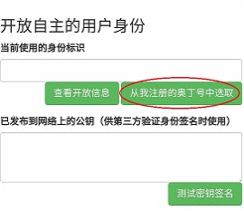
从“我注册的奥丁号”列表里点击选择一个自己的奥丁号，进入查看其属性，如下图所示：
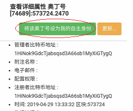
点击“将该奥丁号设为我的自主身份”按钮后，将弹出提示窗口，如下图所示：
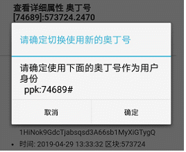
点击“确定”按钮，确认将对应显示的奥丁号设为你的自主身份即可。
然后点击“设置”按钮，返回设置界面，查看里面的“开放自主的用户身份”区域，将显示你“当前使用的身份标识”已经变为刚设定的奥丁号，如下图所示：
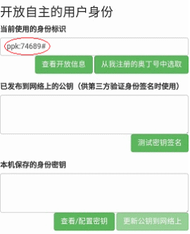
下一步，为了能够自主验证身份，需要生成一对密钥（公钥和私钥），私钥受保护地存放在浏览器内部，用于生成验证所需签名信息；公钥作为奥丁号的关联配置信息被发布到网络上。这样应用服务就可以通过奥丁号关联获取开放的公钥，用来验证你的私钥签名，确认你是对应相应身份标识的合法访问者。
点击上图底部的“查看/配置密钥”按钮，系统将自动为你生成所需密钥，如下图所示：
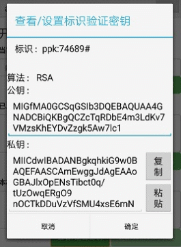
默认采用RSA算法生成密钥（1024位长度），可以点击上图里的“复制”按钮自行备份。用户也可以使用第三方RSA密钥生成工具，来生成更长更安全的密钥（比如2048位），然后“粘贴”到上图对应界面来使用。
注：粘贴导入的RSA密钥需要符合下述JSON格式的字符串定义：
{"RSAPublicKey":"Base64编码的公钥字符串","RSAPrivateKey":"Base64编码的私钥字符串"}
确认密钥生成无误后，点击“确定”按钮保存，这是系统将提示“需要将新设置的公钥发布到网络上”，如下图所示：
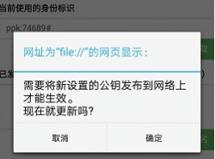
点击“确定”按钮，系统将调用奥丁号注册管理工具来发布公钥，如下图所示：
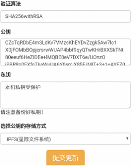
用户可以在这里选择公钥在网络上的存储方式，默认采用IPFS分布式存储服务，也可以选择其它分布式存储服务，然后点击“提交更新”按钮，
系统会将对应公钥，上传到所选择的分布式存储服务上，获得一个类似"ipfs:xxxxx"或"btmfs:xxxxx"等这样的一个存储位置网址，并被自动关联更新到对应奥丁号在BTC区块链的配置信息里。等到这条配置更新交易被BTC网络确认，就可以通过PPk浏览器的“设置”界面查看，如下图所示：
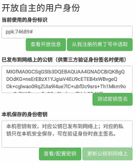
密钥配置更新确认完成后，可以点击“测试密钥签名”按钮，弹出对话框，如下图所示：
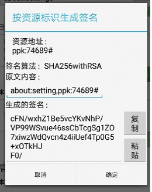
点击“确定”按钮提交签名，通过验证后看到如下图所示，就说明上述奥丁号的自主验证设置已经成功了。
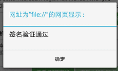
完成奥丁号的自主验证设置后，现在就可以登录具体的应用服务了。这里以PPk-JoyAsset数字资产自主拍卖交易工具原型为例，来说明如何使用奥丁号来自主验证身份并登陆应用服务。
在PPk浏览器里地址栏里输入 ppk:joy/asset/ 或者 http://btmdemo.ppkpub.org/asset/ ，即可访问PPk-JoyAsset数字资产自主拍卖交易工具原型示例，主页显示如下图所示：
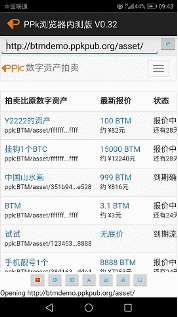
点击网页右上角的弹出菜单按钮，如下图所示：
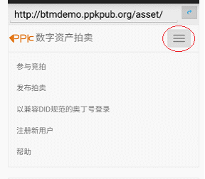
然后点击“以奥丁号登录”功能，进入登录页面，显示如下图所示：
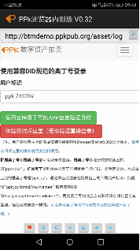
登录界面将自动列出你在PPk浏览器里已设定的自主身份标识，如上图示例里的“ppk:74238#”。现在点击“使用支持奥丁号的APP自主验证身份”绿色按钮，将弹出确认签名的对话框，如下图所示：

点击“确定”按钮提交签名，通过验证后看到如下图所示，就说明指定奥丁号的登录已经成功了。
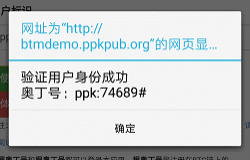
点击“确定”按钮关闭该提示对话框，应用网页将自动切换到对应用户登录成功后的主页，并可以查看到用户的已登录状态信息，如下图所示：
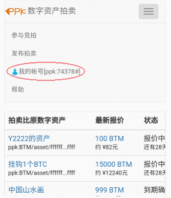
说明在这里示例应用里，你已经用自主注册的根奥丁号（如
ppk:74378#）作为用户身份，通过自主验证登录成功了。
2.2 使用扩展奥丁号作为用户身份
这里以PPk-JoyAsset数字资产自主拍卖交易工具原型为例，来说明如何注册获得扩展奥丁号，然后配合PPk浏览器来自主验证身份并登陆应用服务。
扩展奥丁号是由根奥丁号拥有者自行扩展、灵活定义的，比如PPk-JoyAsset应用的根奥丁号是“ppk:joy”，通过该应用来注册的下属用户标识，就是扩展奥丁号，其定义类似“ ppk:joy/btmid/YourName# ” ，对应兼容DID（去中心化身份标识）规范的定义为“did:ppk:joy/btmid/YourName#”。
在PPk浏览器里地址栏里输入 ppk:joy/asset/ 或者 http://btmdemo.ppkpub.org/asset/ ，即可访问PPk-JoyAsset数字资产自主拍卖交易工具原型示例，主页显示如下图所示：
点击网页右上角的弹出菜单按钮，如下图所示：
然后点击“注册新用户”功能，进入注册页面，显示如下图所示：

参考上图里的红色说明，填写必要的新用户信息，复制备份好签名密钥字符串后，点击“在比原链上注册新用户标识”绿色按钮提交，应用服务将在比原链上注册对应的新用户，成功后将自动以该新用户身份登录使用，回到主页可以查看，如下图所示：
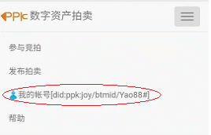
点击上图中的用户帐户链接，可以查看该用户的详细属性，如下图所示：
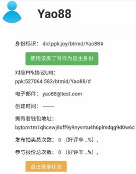
在上图点击“使用该奥丁号作为自主身份”绿色按钮，将弹出提示信息如下图所示，点击“确定”按钮确认将对应显示的奥丁号设为你的自主身份即可：
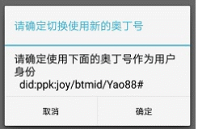
在应用服务处注册用户获得扩展奥丁号，并设为自己的自主身份后，可以点击PPk浏览器底部的“设置”按钮，返回设置界面，查看里面的“开放自主的用户身份”区域，将显示你“当前使用的身份标识”已经变为刚设定的奥丁号，如下图所示：
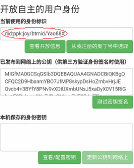
注意上图里显示的公钥，是在注册新用户时由应用服务已经发布到网络上了，现在我们需要将注册新用户时所复制备份的对应私钥，保存到PPk浏览器里，以后就可以自主验证登录了。点击上图里的“查看/配置密钥”按钮，显示如下图所示：
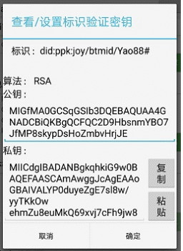
点击“粘贴”按钮，将注册新用户时所复制备份的对应私钥导入上图对话框，替换掉默认自动生成的密钥， 确认无误后，点击“确定”按钮保存即可。回到设置界面，可以看到“本地保存的身份密钥”一栏已经有相应提示，如下图所示，就说明已经将密钥保存到浏览器里了：
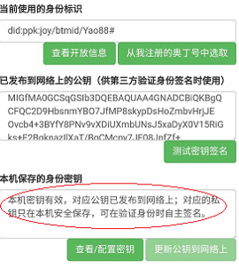
密钥配置完成后，可以点击“测试密钥签名”按钮，弹出对话框，如下图所示：
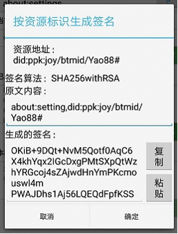
点击“确定”按钮提交签名，通过验证后看到如下图所示，就说明上述新注册的扩展奥丁号的自主验证设置已经成功了。
完成扩展奥丁号的自主验证设置后，现在就可以登录具体的应用服务了，具体操作过程与使用根奥丁号的操作方法是一样的，可以参考前文“使用根奥丁号作为自主身份”一节里，自主验证身份并登陆应用服务示例的详细说明。
详细了解PPk浏览器的更多功能特性可以访问：
https://ppkpub.github.io/docs/DOC_PPk_Browser_Tutorial.pdf